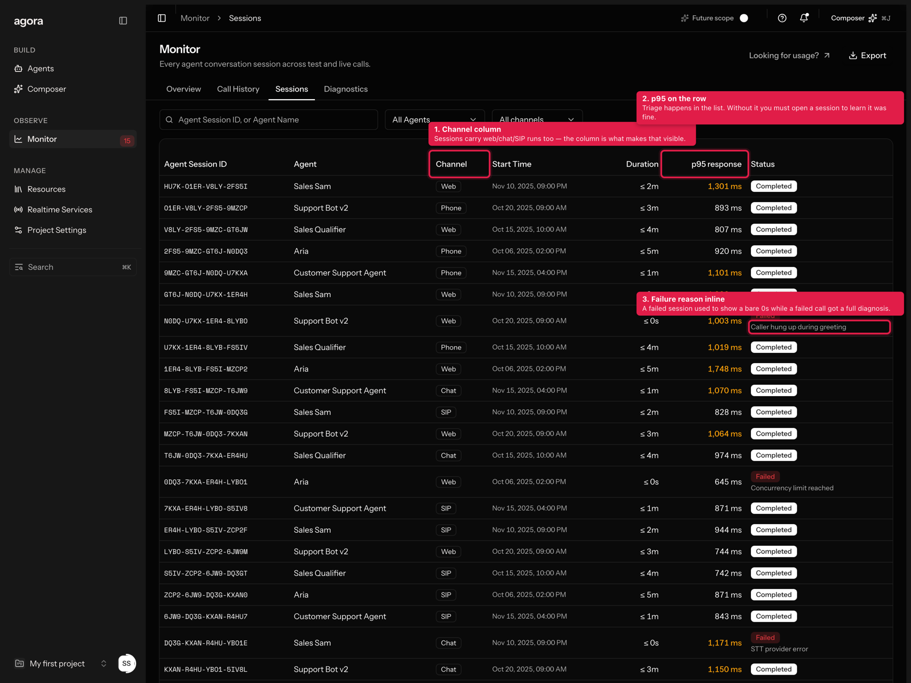

Every request that changes something visible runs this loop end to end, without being asked. A step is skipped only if you say so in that request — and the skip gets named out loud, never done silently.
You review the live site, not the working tree, so an uncommitted change is invisible. Commit messages state the why; if research or a user test drove the change, they name the finding.
git add -A && git commit -m "<type>: <what and why>" && git push origin mainvercel deploy --prod --yes # from the repo rootstudio_x_2/, so the deploy runs from the repo root — not from inside the app folder.
A green CLI isn't proof the page renders, so the route gets checked afterwards.
Captured against the live production build, red-marked. Every marker carries two things, and both are required:
| Field | What it is | Example |
|---|---|---|
name | What the thing is | "p95 on the row" |
why | The design rationale — the decision you're being asked to judge | "Triage happens in the list. Without it you must open a session to learn it was fine." |
A red box with no rationale tells you where to look but not what you're reviewing. The tool has no default for why.
node scripts/annotate-shots.mjs <config.json> references/<feature>-shots
references/protocol-shots/example-config.json.resize_window doesn't change the inner width.chrome --headless --screenshot can't inject script, so it can't draw markers or drive the UI into the state worth capturing.So the script launches headless Chrome at 1600×1200 @2x and drives it over the DevTools Protocol with Node's built-in WebSocket. A pre field runs arbitrary async JS first, which is how a sheet gets opened, a dropdown expanded, or a two-tier connection test driven into its success state before the shot.
It fails loudly. Any marker that doesn't match exits non-zero and names the miss, so a stale selector is a build failure rather than a silently unmarked screenshot.
Self-contained styled HTML at references/<feature>-implementation-log-<date>.html, plus an Artifact copy with images inlined as data URIs (the Artifact CSP blocks external files). Never a markdown dump. The structure that worked for Wave 1:
.claude/workflows/user-test.js, or the closed-loop graph-loop.js.references/console_map/, then docs.agora.io. If a feature doesn't exist, skip it.text-[Npx].cd studio_x_2 && pnpm tsc --noEmit && pnpm next build && cd ..
git add -A && git commit -m "..." && git push origin main
vercel deploy --prod --yes
node scripts/annotate-shots.mjs shots.json references/<feature>-shots
for f in references/<feature>-shots/*.png; do sips -Z 1600 "$f" --out "$f"; done